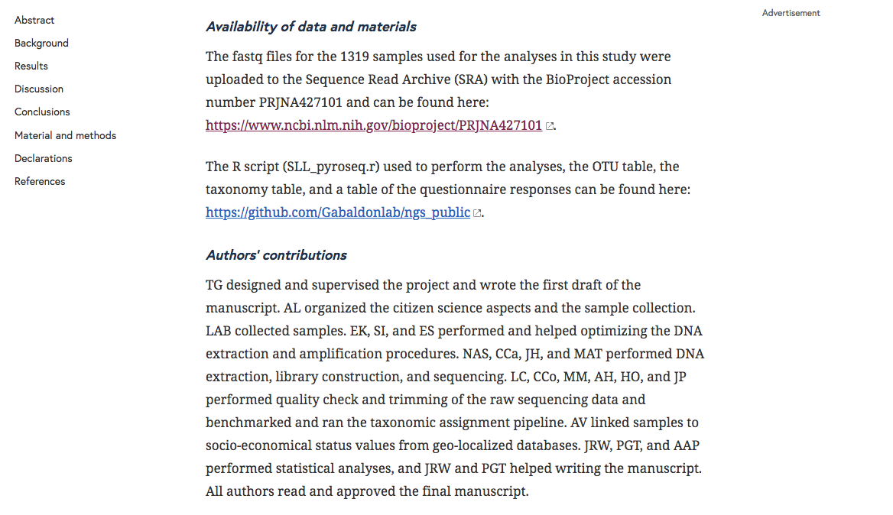
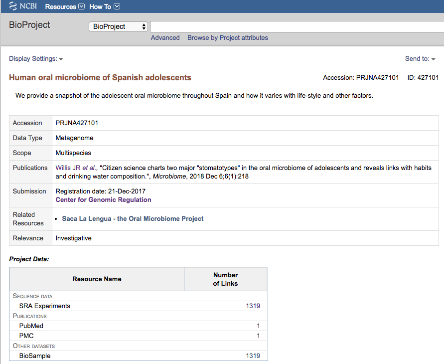
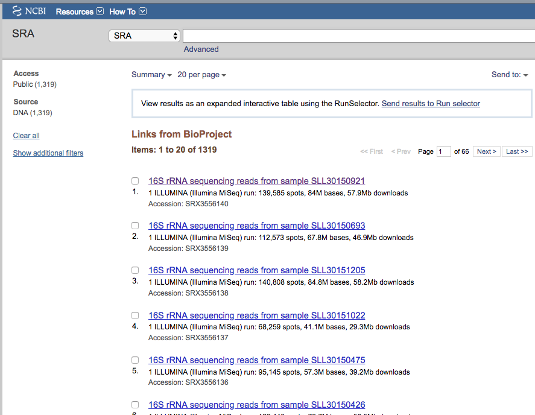
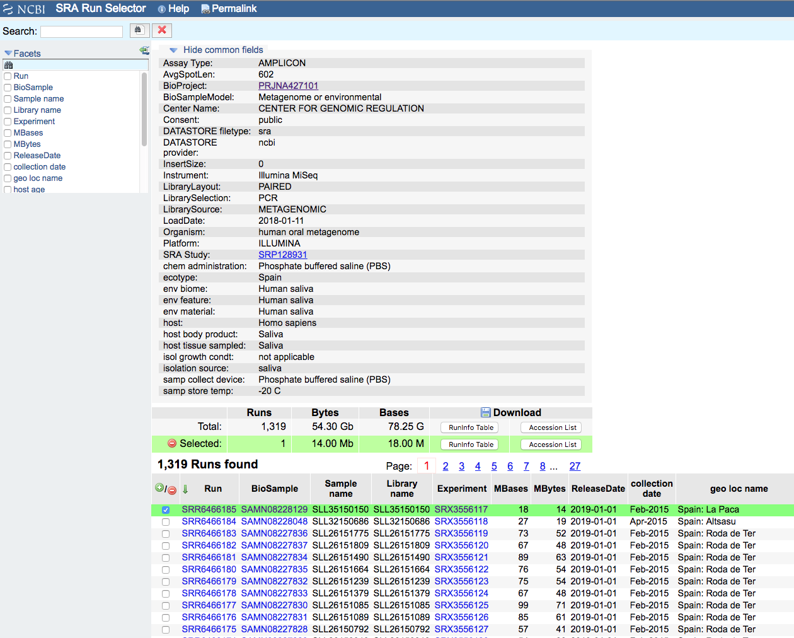

Introduction to Linux
What is Linux?
Linux is an open-source operating system that was developed in the 1990s by Linus Torvalds. Unlike other popular operating systems like Windows and MacOS, Linux is free to download, use, and distribute.
One of the most distinctive features of Linux is that it is highly customizable. Users can choose from a wide variety of “distributions” (or “distros”) of Linux, each with its own unique set of pre-installed software and user interface. Some popular distros include Ubuntu, Debian, and Fedora.
Linux is known for being incredibly stable and secure. It is also highly efficient, which means it can run well even on older or less powerful hardware. This has made Linux a popular choice for servers and other industrial applications.
Because it is open-source, Linux has a large and active community of developers who are constantly working to improve the operating system. This means that there are always new updates and features being added to Linux, and users can be confident that their operating system is always up-to-date and secure.
Linux is a is widely used in bioinformatics due to its ability to handle large data sets and complex computational tasks. Bioinformaticians use Linux to analyze DNA sequences, study gene expression, and develop computational models of biological systems.
One of the most important features of Linux for bioinformatics is its support for powerful command-line tools. These tools allow bioinformaticians to perform complex data processing and analysis tasks with ease. In addition, Linux provides a rich array of programming languages and libraries that are essential for bioinformatics research, such as Python, Java, Perl, C and C++.
One of the key advantages of Linux for bioinformatics is its ability to run on a wide range of hardware, from powerful servers to small embedded devices. This makes it possible to run bioinformatics analyses on a variety of different systems, including high-performance computing clusters, cloud-based platforms, and personal computers.
Another advantage of Linux for bioinformatics is its strong focus on security and reliability. Because Linux is open source, the community is constantly working to improve the operating system and fix any security vulnerabilities that are discovered. This makes Linux a trusted platform for sensitive bioinformatics data.
What is a Command Line Interface (GUI)?

A command line interface (CLI) is a text-based interface used to interact with a computer’s operating system or software by entering commands through a command prompt.
The command prompt usually consists of a text area where the user can enter a command, and the output of the command is displayed in the same area.
Commands can be entered using specific keywords or phrases, which are interpreted by the operating system or software.
For example, in the Windows command prompt, the user can type “dir” to list the files and directories in the current directory, and in the Unix/Linux command line, the user can type “ls” to achieve the same result.
In addition to simple commands, more complex operations can be performed by chaining commands together using special symbols.
Overall, command line interfaces offer a fast and powerful way to interact with a computer or software system, and are often preferred to graphical user interface (GUI) by experienced users or developers due to their flexibility and efficiency.
Create directory and practice moving around
To create file and folders in linux is quite simple. You can use a number of programs for creating an empty file (touch) or an empty directory (mkdir)
touch my_beautiful_file.txt
mkdir my_beautiful_folder
To display the list of files and folder we can use the command ls
ls
my_beautiful_file.txt my_beautiful_folder
To change the name of a file (or a directory) you can use the command mv while for copying the file you can use cp. Adding the option -r (recursive) to cp allows to copy a whole folder and its content.
mv my_beautiful_file.txt my_ugly_file.txt
mv my_beautiful_folder my_ugly_folder
cp my_ugly_file.txt my_beautiful_file.txt
cp my_ugly_folder -r my_beautiful_folder
If you omit the -r option the system will complain
cp my_ugly_folder my_other_folder
You can use mv also for moving a file (or a directory) inside a folder. Also cp will allow you to make a copy inside a folder.
mv my_beautiful_file.txt my_beautiful_folder
cp my_ugly_file.txt my_ugly_folder
ls
my_beautiful_folder my_ugly_file.txt my_ugly_folder
For entering in a folder we can use the tool cd
cd my_ugly_folder
ls
my_ugly_file.txt
For going out we can move one level out
cd ../
ls
my_beautiful_folder my_ugly_file.txt my_ugly_folder
Sometimes we get lost and would like to know where we are.

We can use the command pwd.
We can write to a file using the character >, that means output redirection.
echo "ATGTACTGACTGCATGCATGCCATGCA" > my_dna.txt
And display the content of the file using the program cat
cat my_dna.txt
ATGTACTGACTGCATGCATGCCATGCA
To convert this sequence to a RNA one we can just replace the T base with U by using the program sed. The sintax of this program is the following s/<TO BE REPLACED>/<TO REPLACE>/.
You can add a g at the end if you want to replace every character found s/<TO BE REPLACED>/<TO REPLACE>/g.
sed s/T/U/g my_dna.txt > my_rna.txt
cat my_rna.txt
AUGUACUGACUGCAUGCAUGCCAUGCA
Every command has a manual, you can read it by using the program man with the name of the tool.
man ls
LS(1) User Commands LS(1)
NAME
ls - list directory contents
SYNOPSIS
ls [OPTION]... [FILE]...
DESCRIPTION
List information about the FILEs (the current directory by default). Sort entries alphabetically if none of -cftuvSUX nor --sort is specified.
Mandatory arguments to long options are mandatory for short options too.
-a, --all
do not ignore entries starting with .
-A, --almost-all
do not list implied . and ..
--author
with -l, print the author of each file
-b, --escape
print C-style escapes for nongraphic characters
Manual page ls(1) line 1 (press h for help or q to quit)
Recap
touch writes empty files mkdir empty directories
mv move files (or directory) or change their name
ls list files and directories
cp copy files and direcotries
cd change the directory
echo print values to standard output
cat print the content of a file to standard output
sed replace a string with another
man print the manual for a function
Download files from repositories
Several institutions host different kind of genomics data.
For example the genome browser Ensembl is also a public repository of genomes and annotation that can be freely downloaded and used for any kind of analysis
The resource Ensembl Bacteria contains a large number of bacterial genomes and their annotation. As an example we can browse the page corresponding to *Escherichia coli ‘BL21-Gold(DE3)pLysS AG’*

We can click on “Download genes, cDNAs, ncRNA, proteins FASTA”

And then on DNA

Then as an example we can use the copy the link address of the README file using the mouse right button.

Then we can go back to our command line and use the program wget to download that file and using CTRL+C to paste the address:
wget ftp://ftp.ensemblgenomes.org/pub/bacteria/release-42/fasta/bacteria_22_collection/escherichia_coli_bl21_gold_de3_plyss_ag_/dna/README
--2019-03-06 18:59:13-- ftp://ftp.ensemblgenomes.org/pub/bacteria/release-42/fasta/bacteria_22_collection/escherichia_coli_bl21_gold_de3_plyss_ag_/dna/README
=> ‘README’
Resolving ftp.ensemblgenomes.org (ftp.ensemblgenomes.org)... 193.62.197.94
Connecting to ftp.ensemblgenomes.org (ftp.ensemblgenomes.org)|193.62.197.94|:21... connected.
Logging in as anonymous ... Logged in!
==> SYST ... done. ==> PWD ... done.
==> TYPE I ... done. ==> CWD (1) /pub/bacteria/release-42/fasta/bacteria_22_collection/escherichia_coli_bl21_gold_de3_plyss_ag_/dna ... done.
==> SIZE README ... 4923
==> PASV ... done. ==> RETR README ... done.
Length: 4923 (4.8K) (unauthoritative)
100%[======================================================================================================================>] 4,923 --.-K/s in 0s
2019-03-06 18:59:14 (295 MB/s) - ‘README’ saved [4923]
we can then use the program more to display part of the content of the file:
more README
#### README ####
IMPORTANT: Please note you can download correlation data tables,
supported by Ensembl, via the highly customisable BioMart and
EnsMart data mining tools. See http://www.ensembl.org/biomart/martview or
http://www.ebi.ac.uk/biomart/ for more information.
The genome assembly represented here corresponds to
GCA_000023665.1
#######################
Fasta DNA dumps
#######################
-----------
FILE NAMES
------------
The files are consistently named following this pattern:
<species>.<assembly>.<sequence type>.<id type>.<id>.fa.gz
<species>: The systematic name of the species.
<assembly>: The assembly build name.
<sequence type>:
* 'dna' - unmasked genomic DNA sequences.
--More--(14%)
Pressing the bar allows us to scroll down the file, while for exiting you just click CTRL+C. After reading the README we can download the file named toplevel that contains chromosomes, regions not assembled into chromosomes and N padded haplotype/patch regions:
wget ftp://ftp.ensemblgenomes.org/pub/bacteria/release-42/fasta/bacteria_22_collection/escherichia_coli_bl21_gold_de3_plyss_ag_/dna/Escherichia_coli_bl21_gold_de3_plyss_ag_.ASM2366v1.dna.toplevel.fa.gz
```
We can use the options -lh of the program ls to list attributes of the files and show in human readable format the size fo the files
ls -lh
total 2.0M
drwxr-xr-x 5 lcozzuto Bioinformatics_Unit 209 Mar 7 11:48 advanced_linux_2019
-rw-r--r-- 1 lcozzuto Bioinformatics_Unit 1.4M Mar 7 13:06 Escherichia_coli_bl21_gold_de3_plyss_ag_.ASM2366v1.dna.toplevel.fa.gz
drwxr-xr-x 2 lcozzuto Bioinformatics_Unit 39 Mar 6 18:17 my_beautiful_folder
-rw-r--r-- 1 lcozzuto Bioinformatics_Unit 0 Mar 6 18:15 my_ugly_file.txt
drwxr-xr-x 2 lcozzuto Bioinformatics_Unit 34 Mar 6 18:17 my_ugly_folder
-rw-r--r-- 1 lcozzuto Bioinformatics_Unit 4.9K Mar 6 18:59 README
For unzipping the file we can use the program gunzip. The uncompressed file is now 4.5M.
Let’s see the content of the file.
more Escherichia_coli_bl21_gold_de3_plyss_ag_.ASM2366v1.dna.toplevel.fa
>CP001665 dna:supercontig supercontig:ASM2366v1:CP001665:1:4570938:1 REF
CGTCCTGGATCTTTATTAGATCGATTAAGCCAATTTTTGTCTATGGTCATTAAATTTTCC
AATATGCGGCGTAAATCGTGCCCGCCTCGCGGCAGGATCGTTTACACTTAGCGAGTTCTG
GAAAGTCCTGTGGATAAATCGGGAAAATCTGTGAGAAACAGAAGATCTCTTGCGCAGTTT
AGGCTATGATCCGCGGTCCCGATCGTTTTGCAGGATCTTGATCGGGCATATAACCGCAGA
CAGCGGTTCGTGCGTCACCCTCAAGCAGGGTCTTTTCGACGTACGTCAACAATCATGAAT
GTTTCAGCCTTAGTCATTATCGACTTTTGTTCGAGTGGAGTCCGCCGTGTCACTTTCGCT
TTGGCAGCAGTGTCTTGCCCGATTGCAGGATGAGTTACCAGCCACAGAATTCAGTATGTG
GATACGCCCATTGCAGGCGGAACTGAGCGATAACACGCTGGCCCTGTACGCGCCAAACCG
TTTTGTCCTCGATTGGGTACGGGACAAGTACCTTAATAATATCAATGGACTGCTAACCAG
TTTCTGCGGAGCGGATGCCCCACAGCTGCGTTTTGAAGTCGGCACCAAACCGGTGACGCA
AACGCCACAAGCGGCAGTGACGAGCAACGTCGCGGCCCCTGCACAGGTGGCGCAAACGCA
GCCGCAACGTGCTGCGCCTTCTACGCGCTCAGGTTGGGATAACGTCCCGGCCCCGGCAGA
ACCGACCTATCGTTCTAACGTAAACGTCAAACACACGTTTGATAACTTCGTTGAAGGTAA
ATCTAACCAACTGGCGCGCGCGGCGGCTCGCCAGGTGGCGGATAACCCTGGCGGTGCCTA
TAACCCGTTGTTCCTTTATGGCGGCACGGGTCTGGGTAAAACTCACCTGCTGCATGCGGT
GGGTAACGGCATTATGGCGCGCAAGCCGAATGCCAAAGTGGTTTATATGCACTCCGAGCG
CTTTGTTCAGGACATGGTTAAAGCCCTGCAAAACAACGCGATCGAAGAGTTTAAACGCTA
CTACCGTTCCGTAGATGCACTGCTGATCGACGATATTCAGTTTTTTGCTAATAAAGAACG
ATCTCAGGAAGAGTTTTTCCACACCTTCAACGCCCTGCTGGAAGGTAATCAACAGATCAT
TCTCACCTCGGATCGCTATCCGAAAGAGATCAACGGCGTTGAGGATCGTTTGAAATCCCG
CTTCGGTTGGGGACTGACTGTGGCGATCGAACCGCCAGAGCTGGAAACCCGTGTGGCGAT
CCTGATGAAAAAGGCCGACGAAAACGACATTCGTTTGCCGGGCGAAGTGGCGTTCTTTAT
CGCCAAGCGTCTACGATCTAACGTACGTGAGCTGGAAGGGGCGCTGAACCGCGTCATTGC
The file contains the whole genome of the bacteria.
The first line contains the character > and the name of the molecule / genome.
This format is called FASTA format and is universally used for storing one or multiple DNA/RNA/Protein sequences.
We can now download in the same ways the proteins:

and after unzipping the file we can have a look at it.
more Escherichia_coli_bl21_gold_de3_plyss_ag_.ASM2366v1.pep.all.fa
>ACT27082 pep supercontig:ASM2366v1:CP001665:347:1750:1 gene:ECBD_0001 transcript:ACT27082 gene_biotype:protein_coding transcript_biotype:protein_coding descrip
tion:chromosomal replication initiator protein DnaA
MSLSLWQQCLARLQDELPATEFSMWIRPLQAELSDNTLALYAPNRFVLDWVRDKYLNNIN
GLLTSFCGADAPQLRFEVGTKPVTQTPQAAVTSNVAAPAQVAQTQPQRAAPSTRSGWDNV
PAPAEPTYRSNVNVKHTFDNFVEGKSNQLARAAARQVADNPGGAYNPLFLYGGTGLGKTH
LLHAVGNGIMARKPNAKVVYMHSERFVQDMVKALQNNAIEEFKRYYRSVDALLIDDIQFF
ANKERSQEEFFHTFNALLEGNQQIILTSDRYPKEINGVEDRLKSRFGWGLTVAIEPPELE
TRVAILMKKADENDIRLPGEVAFFIAKRLRSNVRELEGALNRVIANANFTGRAITIDFVR
EALRDLLALQEKLVTIDNIQKTVAEYYKIKVADLLSKRRSRSVARPRQMAMALAKELTNH
SLPEIGDAFGGRDHTTVLHACRKIEQLREESHDIKEDFSNLIRTLSS
>ACT27083 pep supercontig:ASM2366v1:CP001665:1755:2855:1 gene:ECBD_0002 transcript:ACT27083 gene_biotype:protein_coding transcript_biotype:protein_coding descri
ption:DNA polymerase III, beta subunit
MKFTVEREHLLKPLQQVSGPLGGRPTLPILGNLLLQVADGTLSLTGTDLEMEMVARVALV
QPHEPGATTVPARKFFDICRGLPEGAEIAVQLEGERMLVRSGRSRFSLSTLPAADFPNLD
DWQSEVEFTLPQATMKRLIEATQFSMAHQDVRYYLNGMLFETEGEELRTVATDGHRLAVC
SMPIGQSLPSHSVIVPRKGVIELMRMLDGGDNPLRVQIGSNNIRAHVGDFIFTSKLVDGR
FPDYRRVLPKNPDKHLEAGCDLLKQAFARAAILSNEKFRGVRLYVSENQLKITANNPEQE
EAEEILDVTYSGAEMEIGFNVSYVLDVLNALKCENVRMMLTDSVSSVQIEDAASQSAAYV
VMPMRL
>ACT27084 pep supercontig:ASM2366v1:CP001665:2855:3928:1 gene:ECBD_0003 transcript:ACT27084 gene_biotype:protein_coding transcript_biotype:protein_coding descri
ption:DNA replication and repair protein RecF
MSLTRLLIRDFRNIETADLALSPGFNFLVGANGSGKTSVLEAIYTLGHGRAFRSLQIGRV
IRHEQEAFVLHGRLQGEERETAIGLTKDKQGDSKVRIDGTDGHKVAELAHLMPMQLITPE
GFTLLNGGPKYRRAFLDWGCFHNEPGFFTAWSNLKRLLKQRNAALRQVTRYEQLRPWDKE
--More--(0%)
We see that many protein sequences are embedded in the files and separated by their name, always preceded by the character “>”.
To know how many sequences are in the files we can use the program grep with the option -c for counting the number of rows containg the character “>”:
grep ">" -c Escherichia_coli_bl21_gold_de3_plyss_ag_.ASM2366v1.pep.all.fa
4228
Recap
wget downloads file from a URL
more prints a part of the content of a file in interactive way
grep extract the rows containing a particular character / pattern.
Manipulate files, piping, parsing, reformatting
Parsing a file means extracting meaningful parts from a data source. In few words if you have table and are interested only in a number of columns, extracting those columns can be an example of parsing. In our case, for example, we can extract the name of our sequences by using again the program grep and redirecting the output to a new file.
grep ">" Escherichia_coli_bl21_gold_de3_plyss_ag_.ASM2366v1.pep.all.fa > seq_names.txt
more seq_names.txt
>ACT27082 pep supercontig:ASM2366v1:CP001665:347:1750:1 gene:ECBD_0001 transcript:ACT27082 gene_biotype:protein_coding transcript_biotype:protein_coding descrip
tion:chromosomal replication initiator protein DnaA
>ACT27083 pep supercontig:ASM2366v1:CP001665:1755:2855:1 gene:ECBD_0002 transcript:ACT27083 gene_biotype:protein_coding transcript_biotype:protein_coding descri
ption:DNA polymerase III, beta subunit
>ACT27084 pep supercontig:ASM2366v1:CP001665:2855:3928:1 gene:ECBD_0003 transcript:ACT27084 gene_biotype:protein_coding transcript_biotype:protein_coding descri
ption:DNA replication and repair protein RecF
>ACT27085 pep supercontig:ASM2366v1:CP001665:3957:6371:1 gene:ECBD_0004 transcript:ACT27085 gene_biotype:protein_coding transcript_biotype:protein_coding descri
ption:DNA gyrase, B subunit
We can also pipe the results of a program (via Standard output) to a new program (via Standard input) by using the character
`|`, the program head allows to extract the first N rows (indicated by the parameter -n). Tail, instead allows to get the latest N rows.
grep ">" -c Escherichia_coli_bl21_gold_de3_plyss_ag_.ASM2366v1.pep.all.fa
4228
grep ">" Escherichia_coli_bl21_gold_de3_plyss_ag_.ASM2366v1.pep.all.fa | head -n 3
>ACT27082 pep supercontig:ASM2366v1:CP001665:347:1750:1 gene:ECBD_0001 transcript:ACT27082 gene_biotype:protein_coding transcript_biotype:protein_coding description:chromosomal replication initiator protein DnaA
>ACT27083 pep supercontig:ASM2366v1:CP001665:1755:2855:1 gene:ECBD_0002 transcript:ACT27083 gene_biotype:protein_coding transcript_biotype:protein_coding description:DNA polymerase III, beta subunit
>ACT27084 pep supercontig:ASM2366v1:CP001665:2855:3928:1 gene:ECBD_0003 transcript:ACT27084 gene_biotype:protein_coding transcript_biotype:protein_coding description:DNA replication and repair protein RecF
grep ">" Escherichia_coli_bl21_gold_de3_plyss_ag_.ASM2366v1.pep.all.fa | tail -n 3
>ACT31307 pep supercontig:ASM2366v1:CP001665:4569941:4570198:-1 gene:ECBD_4328 transcript:ACT31307 gene_biotype:protein_coding transcript_biotype:protein_coding description:protein of unknown function DUF37
>ACT31308 pep supercontig:ASM2366v1:CP001665:4570162:4570488:-1 gene:ECBD_4329 transcript:ACT31308 gene_biotype:protein_coding transcript_biotype:protein_coding description:ribonuclease P protein component
>ACT31309 pep supercontig:ASM2366v1:CP001665:4570538:4570678:-1 gene:ECBD_4330 transcript:ACT31309 gene_biotype:protein_coding transcript_biotype:protein_coding description:ribosomal protein L34
Going back to the genome file, we can use a combination of grep and wc to count the number of bases. The option -v of grep will remove the row with the indicated character. The option -m of wc tool allows to count only the characters, while -l gives you the number of lines.
grep -v ">" Escherichia_coli_bl21_gold_de3_plyss_ag_.ASM2366v1.dna.toplevel.fa| wc -m
4647121
grep -v ">" Escherichia_coli_bl21_gold_de3_plyss_ag_.ASM2366v1.dna.toplevel.fa| wc -l
76183
Now let’s try to extract only the identifiers from the protein file. As we can see they are located just before a space. So we can slice the first column using the space as delimiter using the program cut and the option -d ” “.
cut -f 1 -d " " seq_names.txt |head -n 5
>ACT27082
>ACT27083
>ACT27084
>ACT27085
>ACT27086
We still have the character > from the fasta file. For removing it we can use the program tr with the option -d (delete).
cut -f 1 -d " " seq_names.txt | tr -d ">" | head -n 5
ACT27082
ACT27083
ACT27084
ACT27085
ACT27086
Sometimes it can be useful to have a random list of identifiers (for instance to have a random background). We can achieve this with the program shuf. The program cat shows the full content of a file.
cut -f 1 -d " " seq_names.txt | tr -d ">" |shuf | head -n 5 > random.list
cat random.list
ACT31118
ACT27123
ACT31080
ACT28234
ACT29418
PS: the list is random, so it is unlikely you will get the same result.
A list of identifiers can be quite useful to go back to the original name list to extract the whole information. We can do this using again the program grep with the options -F (it means search a fixed string, do not interpret it… we will explain this later) and -f for using patterns specified in a file.
grep -Ff random.list seq_names.txt
>ACT27123 pep supercontig:ASM2366v1:CP001665:44295:44414:-1 gene:ECBD_0043 transcript:ACT27123 gene_biotype:protein_coding transcript_biotype:protein_coding description:hypothetical protein
>ACT28234 pep supercontig:ASM2366v1:CP001665:1230560:1230991:1 gene:ECBD_1168 transcript:ACT28234 gene_biotype:protein_coding transcript_biotype:protein_coding description:Nucleoside-diphosphate kinase
>ACT29418 pep supercontig:ASM2366v1:CP001665:2508388:2509098:-1 gene:ECBD_2392 transcript:ACT29418 gene_biotype:protein_coding transcript_biotype:protein_coding description:nitrate reductase molybdenum cofactor assembly chaperone
>ACT31080 pep supercontig:ASM2366v1:CP001665:4316460:4317305:1 gene:ECBD_4097 transcript:ACT31080 gene_biotype:protein_coding transcript_biotype:protein_coding description:MIP family channel protein
>ACT31118 pep supercontig:ASM2366v1:CP001665:4355734:4355916:-1 gene:ECBD_4135 transcript:ACT31118 gene_biotype:protein_coding transcript_biotype:protein_coding description:hypothetical protein
If we want to extract also the corresponding sequence the situation is more complex.
First of all we need to convert the fasta format in a tab separated format with two columns: and id and a sequence. And then use grep again to extract our sequences of interest. The conversion can be achieved using one of the most powerful linux tool, that is a programming language: awk
Awk’s basic syntax:
awk 'OPTIONAL PATTERN {SOME INSTRUCTIONS}' FILENAME
Awk reads the files line by line.
As a naive example we can just print the content of the file using awk ($0 is the whole line):
awk '{print $0}' Escherichia_coli_bl21_gold_de3_plyss_ag_.ASM2366v1.pep.all.fa |head -n 3
>ACT27082 pep supercontig:ASM2366v1:CP001665:347:1750:1 gene:ECBD_0001 transcript:ACT27082 gene_biotype:protein_coding transcript_biotype:protein_coding description:chromosomal replication initiator protein DnaA
MSLSLWQQCLARLQDELPATEFSMWIRPLQAELSDNTLALYAPNRFVLDWVRDKYLNNIN
GLLTSFCGADAPQLRFEVGTKPVTQTPQAAVTSNVAAPAQVAQTQPQRAAPSTRSGWDNV
Or we can remove the carriage return by setting the built-in variable ORS to empty (Output Record Separator Variable)
head -n 10 Escherichia_coli_bl21_gold_de3_plyss_ag_.ASM2366v1.pep.all.fa | awk '{ORS=""; print $0}'
>ACT27082 pep supercontig:ASM2366v1:CP001665:347:1750:1 gene:ECBD_0001 transcript:ACT27082 gene_biotype:protein_coding transcript_biotype:protein_coding description:chromosomal replication initiator protein DnaAMSLSLWQQCLARLQDELPATEFSMWIRPLQAELSDNTLALYAPNRFVLDWVRDKYLNNINGLLTSFCGADAPQLRFEVGTKPVTQTPQAAVTSNVAAPAQVAQTQPQRAAPSTRSGWDNVPAPAEPTYRSNVNVKHTFDNFVEGKSNQLARAAARQVADNPGGAYNPLFLYGGTGLGKTHLLHAVGNGIMARKPNAKVVYMHSERFVQDMVKALQNNAIEEFKRYYRSVDALLIDDIQFFANKERSQEEFFHTFNALLEGNQQIILTSDRYPKEINGVEDRLKSRFGWGLTVAIEPPELETRVAILMKKADENDIRLPGEVAFFIAKRLRSNVRELEGALNRVIANANFTGRAITIDFVREALRDLLALQEKLVTIDNIQKTVAEYYKIKVADLLSKRRSRSVARPRQMAMALAKELTNHSLPEIGDAFGGRDHTTVLHACRKIEQLREESHDIKEDFSNLIRTLSS>ACT27083 pep supercontig:ASM2366v1:CP001665:1755:2855:1 gene:ECBD_0002 transcript:ACT27083 gene_biotype:protein_coding transcript_biotype:protein_coding description:DNA polymerase III, beta subunit
At this point using we need a if statement to reach the point. In few words this statement says: EXECUTE a piece of code IF a given condition is met OTHERWISE (else) do something else.
As an example we can use the if to select the header like a grep function using the matching expression tilde ~ with the character *>*
awk '{if ($0~">") {print $0}}' Escherichia_coli_bl21_gold_de3_plyss_ag_.ASM2366v1.pep.all.fa |head -n 3
>ACT27082 pep supercontig:ASM2366v1:CP001665:347:1750:1 gene:ECBD_0001 transcript:ACT27082 gene_biotype:protein_coding transcript_biotype:protein_coding description:chromosomal replication initiator protein DnaA
>ACT27083 pep supercontig:ASM2366v1:CP001665:1755:2855:1 gene:ECBD_0002 transcript:ACT27083 gene_biotype:protein_coding transcript_biotype:protein_coding description:DNA polymerase III, beta subunit
>ACT27084 pep supercontig:ASM2366v1:CP001665:2855:3928:1 gene:ECBD_0003 transcript:ACT27084 gene_biotype:protein_coding transcript_biotype:protein_coding description:DNA replication and repair protein RecF
Note that this syntax can be simplified when looking for patterns:
awk '$0 ~ ">" {print $0}' Escherichia_coli_bl21_gold_de3_plyss_ag_.ASM2366v1.pep.all.fa | head -n 3
>ACT27082 pep supercontig:ASM2366v1:CP001665:347:1750:1 gene:ECBD_0001 transcript:ACT27082 gene_biotype:protein_coding transcript_biotype:protein_coding description:chromosomal replication initiator protein DnaA
>ACT27083 pep supercontig:ASM2366v1:CP001665:1755:2855:1 gene:ECBD_0002 transcript:ACT27083 gene_biotype:protein_coding transcript_biotype:protein_coding description:DNA polymerase III, beta subunit
>ACT27084 pep supercontig:ASM2366v1:CP001665:2855:3928:1 gene:ECBD_0003 transcript:ACT27084 gene_biotype:protein_coding transcript_biotype:protein_coding description:DNA replication and repair protein RecF
So, combining the previous example, we can remove the carriage return and in case we found the > character we print that row preceded by a carriage return and followed by a tab (t)
awk '{ORS=""; if ($0~">") {print "\n"$0"\t"} else {print $0}}' Escherichia_coli_bl21_gold_de3_plyss_ag_.ASM2366v1.pep.all.fa |head -n 3
>ACT27082 pep supercontig:ASM2366v1:CP001665:347:1750:1 gene:ECBD_0001 transcript:ACT27082 gene_biotype:protein_coding transcript_biotype:protein_coding description:chromosomal replication initiator protein DnaA MSLSLWQQCLARLQDELPATEFSMWIRPLQAELSDNTLALYAPNRFVLDWVRDKYLNNINGLLTSFCGADAPQLRFEVGTKPVTQTPQAAVTSNVAAPAQVAQTQPQRAAPSTRSGWDNVPAPAEPTYRSNVNVKHTFDNFVEGKSNQLARAAARQVADNPGGAYNPLFLYGGTGLGKTHLLHAVGNGIMARKPNAKVVYMHSERFVQDMVKALQNNAIEEFKRYYRSVDALLIDDIQFFANKERSQEEFFHTFNALLEGNQQIILTSDRYPKEINGVEDRLKSRFGWGLTVAIEPPELETRVAILMKKADENDIRLPGEVAFFIAKRLRSNVRELEGALNRVIANANFTGRAITIDFVREALRDLLALQEKLVTIDNIQKTVAEYYKIKVADLLSKRRSRSVARPRQMAMALAKELTNHSLPEIGDAFGGRDHTTVLHACRKIEQLREESHDIKEDFSNLIRTLSS
>ACT27083 pep supercontig:ASM2366v1:CP001665:1755:2855:1 gene:ECBD_0002 transcript:ACT27083 gene_biotype:protein_coding transcript_biotype:protein_coding description:DNA polymerase III, beta subunit MKFTVEREHLLKPLQQVSGPLGGRPTLPILGNLLLQVADGTLSLTGTDLEMEMVARVALVQPHEPGATTVPARKFFDICRGLPEGAEIAVQLEGERMLVRSGRSRFSLSTLPAADFPNLDDWQSEVEFTLPQATMKRLIEATQFSMAHQDVRYYLNGMLFETEGEELRTVATDGHRLAVCSMPIGQSLPSHSVIVPRKGVIELMRMLDGGDNPLRVQIGSNNIRAHVGDFIFTSKLVDGRFPDYRRVLPKNPDKHLEAGCDLLKQAFARAAILSNEKFRGVRLYVSENQLKITANNPEQEEAEEILDVTYSGAEMEIGFNVSYVLDVLNALKCENVRMMLTDSVSSVQIEDAASQSAAYVVMPMRL
awk '{ORS=""; if ($0~">") {print "\n"$0"\t"} else {print $0}}' Escherichia_coli_bl21_gold_de3_plyss_ag_.ASM2366v1.pep.all.fa > proteins.tab
wc -l proteins.tab
4228 proteins.tab
wc -l seq_names.txt
4228 seq_names.txt
So now we can use the grep command to extract our sequence of interest.
grep -Ff random.list proteins.tab
>ACT27123 pep supercontig:ASM2366v1:CP001665:44295:44414:-1 gene:ECBD_0043 transcript:ACT27123 gene_biotype:protein_coding transcript_biotype:protein_coding description:hypothetical protein MEYKVWHFLLTTQARFVQHDESDESKLHLCFIRYTFVKG
>ACT28234 pep supercontig:ASM2366v1:CP001665:1230560:1230991:1 gene:ECBD_1168 transcript:ACT28234 gene_biotype:protein_coding transcript_biotype:protein_coding description:Nucleoside-diphosphate kinase MAIERTFSIIKPNAVAKNVIGNIFARFEAAGFKIVGTKMLHLTVEQARGFYAEHDGKPFFDGLVEFMTSGPIVVSVLEGENAVQRHRDLLGATNPANALAGTLRADYADSLTENGTHGSDSVESAAREIAYFFGEGEVCPRTR
>ACT29418 pep supercontig:ASM2366v1:CP001665:2508388:2509098:-1 gene:ECBD_2392 transcript:ACT29418 gene_biotype:protein_coding transcript_biotype:protein_coding description:nitrate reductase molybdenum cofactor assembly chaperone MIELVIVSRLLEYPDAALWQHQQEMFEAIAASKNLSKEDAHALGIFLRDLTAMDPLDAQAQYSELFDRGRATSLLLFEHVHGESRDRGQAMVDLLAQYEQHGLQLNSRELPDHLPLYLEYLSQLPQSEAVEGLKDIAPILALLSARLQQRESRYAVMFDLLLKLANTAIDSDKVAEKIADEARDDTPQALDAVWEEEQVKFFADKGCGDSAITAHQRRFAGAVAPQYLNITTGGQH
>ACT31080 pep supercontig:ASM2366v1:CP001665:4316460:4317305:1 gene:ECBD_4097 transcript:ACT31080 gene_biotype:protein_coding transcript_biotype:protein_coding description:MIP family channel protein MSQTSTLKGQCIAEFLGTGLLIFFGVGCVAALKVAGASFGQWEISVIWGLGVAMAIYLTAGVSGAHLNPAVTIALWLFACFDKRKVIPFIVSQVAGAFCAAALVYGLYYNLFFDFEQTHHIVRGSVESVDLAGTFSTYPNPHINFVQAFAVEMVITAILMGLILALTDDGNGVPRGPLAPLLIGLLIAVIGASMGPLTGFAMNPARDFGPKVFAWLAGWGNVAFTGGRDIPYFLVPLFGPIVGAIVGAFAYRKLIGRHLPCDICVVEEKETTTPSEQKASL
>ACT31118 pep supercontig:ASM2366v1:CP001665:4355734:4355916:-1 gene:ECBD_4135 transcript:ACT31118 gene_biotype:protein_coding transcript_biotype:protein_coding description:hypothetical protein MGKNDVNQIADNVRVVHAGCGVNALSGLQSRINSMYCSLLVGLISAAHQAILRLSSVSCP
Recap
cut extract the indicated column
awk allows several kind of parsing operations
head extract the indicated number of rows from the beginning of a file
Sequence file formats: Fasta and fastq
We already showed the fasta format. There is a header characterized by the presence of > and a number of rows containing the sequence. The format is used for both nucleic acids and proteins.
Another way to store sequencing data, and particularly the short reads coming from the sequencers is the Fastq format. This format allows to store also the information about the quality of that particular base, i.e. the probability that that base reading was true or not.

The format contains four rows for sequence with: * a header containing @ as the first character * the sequence content * a spacer * the quality encoded using ASCII characters.

Currently most of the journals require the submissions of NGS data in a public repository upon publishing.
The major repositories are: * SRA (Sequence Read Archive) from US * `ENA <https://www.ebi.ac.uk/ena`__ (European Nucleotide Archive) * `DDBJ-DRA <https://www.ddbj.nig.ac.jp/dra/index-e.html`__ from Japan.
They are interconnected and mirror the data among them and are connected to other databases that contain also the results of a given analysis such as GEO and Array-express that contain expression data.
As an example we can have a look at this paper about the characterization of the oral microbiome of young Spaniards (in which we were collaborators :) )
{kind=link}
As you can see there is a section with “Availability of data and materials” with a link to the SRA accession number: PRJNA427101.
{kind=link}
We can visit the webpage containing the information about every experiment submitted for that paper / project. This page is called BioProject
{kind=link}
The page links to the whole list of sequencing runs (1319)
{kind=link}
We can send now the whole list to Send results to Run selector.
{kind=link}
Now we can select the samples of interest and download the meta-data or the accession list. The accession list is needed for the download using fastq-dump a program that is mandatory for this kind of database.
Let’s try to download the first sample with the access SRR6466185. We need to indicate to the program that the data are from a paired end experiment, so they need to be written in separate files (option –split-files), and we want the to be compressed to avoid to waste disk space (option –gzip).
We should have 32,345 reads. Let’s try to count them using a combination of zcat that uncompress the file and writes the content to the terminal and wc.
So considering that each sequence is defined by 4 rows we should have `32,345*4=129,380`. We can also use awk for embedding also the division:
Recap
fastq-dump is a program to retrieve data from SRA database (installation is needed)
zcat equivalent of cat for gzipped files
Bed format and regular expressions
The BED format is a “tab” separated text file. It consists of one line per feature, each containing 3-12 columns of data. It is used for indicating genomic locations as the one of exons, binding sites, regulatory elements, etc.
Typical 6-fields bed format
|chrom|chromStart|chromEnd|name|score|strand| |:---:|:—:|:---:|:—:|:---:|:—:| |chr7|127471196|127472363|Pos1|0|+| |chr7|127472363|127473530|Pos2|0|+| |chr7|127473530|127474697|Pos3|0|+| |chr7|127474697|127475864|Pos4|0|+|
Additionally you may have up to 6 more fields:
|thickStart|thickEnd|itemRgb|blockCount|blockSizes|blockStarts| |:---:|:—:|:---:|:—:|:---:|:—:| |127471196|127472363|255,0,0|0|0|0| |127472363|127473530|255,0,0|0|0|0| |127473530|127474697|255,0,0|0|0|0| |127474697|127475864|255,0,0|0|0|0|
This kind of file can be fed to a genome browser like `UCSC genome browser <https://genome-euro.ucsc.edu/cgi-bin/hgGateway?redirect=manual&source=genome.ucsc.edu`__ to highlight the genomic positions. Here an example about our coordinates:
Genome browser

BED files can be uploaded to public databases like GEO and ArrayExpress. As an example let’s download the putative binding site positions obtained by a ChIP-seq experiment on Suz12 transcription factor [GSE41589](https://www.ncbi.nlm.nih.gov/geo/query/acc.cgi?acc=GSE41589).
<img src=”images/GEO_chipseq.png” width=”600”/>
Let’s use the right-click on FTP link to copy the link and wget to download the file.
```{bash} wget ftp://ftp.ncbi.nlm.nih.gov/geo/series/GSE41nnn/GSE41589/suppl/GSE41589_Suz12_BindingSites.txt.gz
- –2019-03-08 15:03:40– ftp://ftp.ncbi.nlm.nih.gov/geo/series/GSE41nnn/GSE41589/suppl/GSE41589_Suz12_BindingSites.txt.gz
=> ‘GSE41589_Suz12_BindingSites.txt.gz’
Resolving ftp.ncbi.nlm.nih.gov (ftp.ncbi.nlm.nih.gov)… 130.14.250.12, 2607:f220:41e:250::11 Connecting to ftp.ncbi.nlm.nih.gov (ftp.ncbi.nlm.nih.gov)|130.14.250.12|:21… connected. Logging in as anonymous … Logged in! ==> SYST … done. ==> PWD … done. ==> TYPE I … done. ==> CWD (1) /geo/series/GSE41nnn/GSE41589/suppl … done. ==> SIZE GSE41589_Suz12_BindingSites.txt.gz … 72526 ==> PASV … done. ==> RETR GSE41589_Suz12_BindingSites.txt.gz … done. Length: 72526 (71K) (unauthoritative)
100%[======================================================================================================================>] 72,526 258KB/s in 0.3s
2019-03-08 15:03:42 (258 KB/s) - ‘GSE41589_Suz12_BindingSites.txt.gz’ saved [72526] ```
Since we have one row per feature, just counting the number of rows will give us the number of binding sites:
```{bash} zcat GSE41589_Suz12_BindingSites.txt.gz | wc -l
While extracting the first column with cut and piping the result to uniq will give us the list of chromosomes in which there is at lease one binding site
`{bash}
zcat GSE41589_Suz12_BindingSites.txt.gz | cut -f 1 | uniq
chr1
chr10
chr11
chr12
chr13
chr14
chr15
chr16
chr17
chr18
chr19
chr2
chr3
chr4
chr5
chr6
chr7
chr8
chr9
chrX
chrY
`
We should not use uniq alone if we are not sure the values are not sorted… As an example if we shuffle the chromosome order uniq won’t work as expected
```{bash} zcat GSE41589_Suz12_BindingSites.txt.gz | cut -f 1 | uniq | wc -l 21
zcat GSE41589_Suz12_BindingSites.txt.gz | cut -f 1 | shuf | uniq | wc -l 7633 ```
We can fix this using another tool named sort
`{bash}
zcat GSE41589_Suz12_BindingSites.txt.gz | cut -f 1 | shuf | sort | uniq | wc -l
21
`
The tool uniq has an interesting parameter called -c that gives us the number of times that a particular row was found. In this way we have the number of binding site per chromosome.
```{bash} zcat GSE41589_Suz12_BindingSites.txt.gz | cut -f 1 | shuf | sort | uniq -c
525 chr1 362 chr10 603 chr11 367 chr12 392 chr13 314 chr14 351 chr15 193 chr16 303 chr17 295 chr18 232 chr19 672 chr2 397 chr3 547 chr4 511 chr5 445 chr6 480 chr7 381 chr8 435 chr9 244 chrX
5 chrY
Now let’s try to extract the binding sites from the chromosome 1. We can use grep but we will extract also unwanted things…
`{bash}
zcat GSE41589_Suz12_BindingSites.txt.gz| grep chr1| cut -f 1| uniq
chr1
chr10
chr11
chr12
chr13
chr14
chr15
chr16
chr17
chr18
chr19
`
To avoid to extract also other chromosomes that simply start for chr1 we can use the option -w
`{bash}
zcat GSE41589_Suz12_BindingSites.txt.gz| grep -w chr1| cut -f 1| uniq
chr1
`
If you want more complex search we can use the regular expression: a sequence of characters that define a search pattern.
Single characters bewteen square brackets can be searched at the same time
`{bash}
zcat GSE41589_Suz12_BindingSites.txt.gz| grep -w "chr[129]" | cut -f 1|uniq
chr1
chr2
chr9
`
For searching chromosomes with two digits you should use more intervals
`{bash}
zcat GSE41589_Suz12_BindingSites.txt.gz| grep -w "chr[1][123]" | cut -f 1|uniq
chr11
chr12
chr13
`
Using a hiphen - allows to extract a whole interval from the first to the last number
`{bash}
zcat GSE41589_Suz12_BindingSites.txt.gz| grep -w "chr[1][0-9]" | cut -f 1|uniq
chr10
chr11
chr12
chr13
chr14
chr15
chr16
chr17
chr18
chr19
`
Another useful regular expression is ^ and $ that indicates that the pattern has to be found at the beginning or the end of the string. Also awk is able to use regular expressions, this will make the search more accurate since you can decide which column to scan.
```{bash} awk -F”t” ‘{if ($2~”^MCELDI”) print}’ proteins.tab
>ACT27842 pep supercontig:ASM2366v1:CP001665:800015:801223:-1 gene:ECBD_0774 transcript:ACT27842 gene_biotype:protein_coding transcript_biotype:protein_coding description:transposase IS4 family protein MCELDILHDSLYQFCPELHLKRLNSLTLACHALLDCKTLTLTELGRNLPTKARTKHNIKRIDRLLGNRHLHKERLAVYRWHASFICSGNTMPIVLVDWSDIREQKRLMVLRASVALHGRSVTLYEKAFPLSEQCSKKAHDQFLADLASILPSNTTPLIVSDAGFKVPWYKSVEKLGWYWLSRVRGKVQYADLGAENWKPISNLHDMSSSHSKTLGYKRLTKSNPISCQILLYKSRSKGRKNQRSTRTHCHHPSPKIYSASAKEPWILATNLPVEIRTPKQLVNIYSKRMQIEETFRDLKSPAYGLGLRHSRTSSSERFDIMLLIALMLQLTCWLAGVHAQKQGWDKHFQANTVRNRNVLSTVRLGMEVLRHSGYTITREDSLVAATLLTQNLFTHGYVLGKL >ACT27843 pep supercontig:ASM2366v1:CP001665:801353:802561:-1 gene:ECBD_0775 transcript:ACT27843 gene_biotype:protein_coding transcript_biotype:protein_coding description:transposase IS4 family protein MCELDILHDSLYQFCPELHLKRLNSLTLACHALLDCKTLTLTELGRNLPTKARTKHNIKRIDRLLGNRHLHKERLAVYRWHASFICSGNTMPIVLVDWSDIREQKRLMVLRASVALHGRSVTLYEKAFPLSEQCSKKAHDQFLADLASILPSNTTPLIVSDAGFKVPWYKSVEKLGWYWLSRVRGKVQYADLGAENWKPISNLHDMSSSHSKTLGYKRLTKSNPISCQILLYKSRSKGRKNQRSTRTHCHHPSPKIYSASAKEPWVLATNLPVEIRTPKQLVNIYSKRMQIEETFRDLKSPAYGLGLRHSRTSSSERFDIMLLIALMLQLTCWLAGVHAQKQGWDKHFQANTVRNRNVLSTVRLGMEVLRHSGYTITREDLLVAATLLAQNLFTHGYALGKL >ACT28724 pep supercontig:ASM2366v1:CP001665:1791810:1793018:-1 gene:ECBD_1670 transcript:ACT28724 gene_biotype:protein_coding transcript_biotype:protein_coding description:transposase IS4 family protein MCELDILHDSLYQFCPELHLKRLNSLTLACHALLDCKTLTLTELGRNLPTKARTKHNIKRIDRLLGNRHLHKERLAVYRWHASFICSGNTMPIVLVDWSDIREQKRLMVLRASVALHGRSVTLYEKAFPLSEQCSKKAHDQFLADLASILPSNTTPLIVSDAGFKVPWYKSVEKLGWYWLSRVRGKVQYADLGAENWKPISNLHDMSSSHSKTLGYKRLTKSNPISCQILLYKSRSKGRKNQRSTRTHCHHPSPKIYSASAKEPWVLATNLPVEIRTPKQLVNIYSKRMQIEETFRDLKSPAYGLGLRHSRTSSSERFDIMLLIALMLQLTCWLAGVHAQKQGWDKHFQANTVRNRNVLSTVRLGMEVLRHSGYTITREDLLVAATLLAQNLFTHGYALGKL >ACT28727 pep supercontig:ASM2366v1:CP001665:1795281:1796489:-1 gene:ECBD_1674 transcript:ACT28727 gene_biotype:protein_coding transcript_biotype:protein_coding description:transposase IS4 family protein MCELDILHDSLYQFCPELHLKRLNSLTLACHALLDCKTLTLTELGRNLPTKARTKHNIKRIDRLLGNRHLHKERLAVYRWHASFICSGNTMPIVLVDWSDIREQKRLMVLRASVALHGRSVTLYEKAFPLSEQCSKKAHDQFLADLASILPSNTTPLIVSDAGFKVPWYKSVEKLGWYWLSRVRGKVQYADLGAENWKPISNLHDMSSSHSKTLGYKRLTKSNPISCQILLYKSRSKGRKNQRSTRTHCHHPSPKIYSASAKEPWILATNLPVEIRTPKQLVNIYSKRMQIEETFRDLKSPAYGLGLRHSRTSSSERFDIMLLIALMLQLTCWLAGVHAQKQGWDKHFQANTVRNRNVLSTVRLGMEVLRHSGYTITREDLLVAATLLAQNLFTHGYALGKL >ACT30468 pep supercontig:ASM2366v1:CP001665:3610918:3612126:-1 gene:ECBD_3469 transcript:ACT30468 gene_biotype:protein_coding transcript_biotype:protein_coding description:transposase IS4 family protein MCELDILHDSLYQFCPELHLKRLNSLTLACHALLDCKTLTLTELGRNLPTKARTKHNIKRIDRLLGNRHLHKERLAVYRWHASFICSGNTMPIVLVDWSDIREQKRLMVLRASVALHGRSVTLYEKAFPLSEQCSKKAHDQFLADLASILPSNTTPLIVSDAGFKVPWYKSVEKLGWYWLSRVRGKVQYADLGAENWKPISNLHDMSSSHSKTLGYKRLTKSNPISCQILLYKSRSKGRKNQRSTRTHCHHPSPKIYSASAKEPWILATNLPVEIRTPKQLVNIYSKRMQIEETFRDLKSPAYGLGLRHSRTSSSERFDIMLLIALMLQLTCWLAGVHAQKQGWDKHFQANTVRNRNVLSTVRLGMEVLRHSGYTITREDSLVAATLLTQNLFTHGYVLGKL >ACT31152 pep supercontig:ASM2366v1:CP001665:4391870:4393078:-1 gene:ECBD_4170 transcript:ACT31152 gene_biotype:protein_coding transcript_biotype:protein_coding description:transposase IS4 family protein MCELDILHDSLYQFCPELHLKRLNSLTLACHALLDCKTLTLTELGRNLPTKARTKHNIKRIDRLLGNRHLHKERLAVYRWHASFICSGNTMPIVLVDWSDIREQKRLMVLRASVALHGRSVTLYEKAFPLSEQCSKKAHDQFLADLASILPSNTTPLIVSDAGFKVPWYKSVEKLGWYWLSRVRGKVQYADLGAENWKPISNLHDMSSSHSKTLGYKRLTKSNPISCQILLYKSRSKGRKNQRSTRTHCHHPSPKIYSASAKEPWILATNLPVEIRTPKQLVNIYSKRMQIEETFRDLKSPAYGLGLRHSRTSSSERFDIMLLIALMLQLTCWLAGVHAQKQGWDKHFQANTVRNRNVLSTVRLGMEVLRHSGYTITREDLLVAATLLAQNLFTHGYALGKL
awk -F”t” ‘{if ($2~”YFAKRLK$”) print}’ proteins.tab
>ACT27943 pep supercontig:ASM2366v1:CP001665:911724:912023:-1 gene:ECBD_0875 transcript:ACT27943 gene_biotype:protein_coding transcript_biotype:protein_coding description:transposase IS3/IS911 family protein MTKTVSTSKKPRKQHSPEFRSEALKLAERIGVTAAARELSLYESQLYNWRSKQQNQQTSSERELEMSTEIARLKRQLAERDEELAILQKAATYFAKRLK >ACT29129 pep supercontig:ASM2366v1:CP001665:2195088:2195387:-1 gene:ECBD_2089 transcript:ACT29129 gene_biotype:protein_coding transcript_biotype:protein_coding description:transposase IS3/IS911 family protein MTKTVSTSKKPRKQHSPEFRSEALKLAERIGVTAAARELSLYESQLYNWRSKQQNQQTSSERELEMSTEIARLKRQLAERDEELAILQKAATYFAKRLK >ACT29266 pep supercontig:ASM2366v1:CP001665:2355429:2355728:-1 gene:ECBD_2236 transcript:ACT29266 gene_biotype:protein_coding transcript_biotype:protein_coding description:transposase IS3/IS911 family protein MTKTVSTSKKPRKQHSPEFRSEALKLAERIGVTAAARELSLYESQLYNWRSKQQNQQTSSERELEMSTEIARLKRQLAERDEELAILQKAATYFAKRLK >ACT29589 pep supercontig:ASM2366v1:CP001665:2682665:2682964:1 gene:ECBD_2567 transcript:ACT29589 gene_biotype:protein_coding transcript_biotype:protein_coding description:transposase IS3/IS911 family protein MTKTVSTSKKPRKQHSPEFRSEALKLAERIGVTAAARELSLYESQLYNWRSKQQNQQTSSERELEMSTEIARLKRQLAERDEELAILQKAATYFAKRLK ```
Other useful pattern for the regular expression is the dot . that means any charachter.
`{bash}
grep -v ">" Escherichia_coli_bl21_gold_de3_plyss_ag_.ASM2366v1.pep.all.fa | grep "AAAAA.A"
`
MKLSRRSFMKANAV**AAAAAAA**GLSVPGVARAVVGQQEAIKWDKAPCRFCGTGCGVLVGTQ
EQQRRMEAERLAQMQQLSHQDDDS**AAAAALAA**QTGERKVGRNDPCPCGSGKKYKQCHGRL
`{bash}
grep -v ">" Escherichia_coli_bl21_gold_de3_plyss_ag_.ASM2366v1.pep.all.fa | grep "A[GA]AAA.AA"
`
GE**AGAAAPAA**KQEAAPAAAPAPAAGVKEVNVPDIGGDEVEVTEVMVKVGDKVAAEQSLIT
EQQRRMEAERLAQMQQLSHQDDDS**AAAAALAA**QTGERKVGRNDPCPCGSGKKYKQCHGRL
More extended regular expression can be searched by using grep with the parameter -E. For instance we can search for repetition:
`{bash}
grep -v ">" Escherichia_coli_bl21_gold_de3_plyss_ag_.ASM2366v1.pep.all.fa | grep -E "(AT){3}"
`
GVGIGIETVDGVPVKINNNSGATFVLSDGSNTLLFNTWVQAKSGRDVTLGNFT**ATATAT**F
<h3>Recap</h3>
uniq it removes the duplicated elements in a list
sort it sorts a given list
shuf it shuffles a given list
## Exercises
We see that some of the protein sequences are repeated in proteins.tab file. So different genes produce the same protein. How many unique proteins do we have in our proteins.tab file?
How many sequences in SRR6466185_1.fastq.gz contain the pattern “GGGATGACGGC”? And how many in SRR6466185_2.fastq.gz?
Can you calculate the sum of the size of the first 10 sequences in proteins.tab?
Can you tell how many different kind of description there are in seq_names.txt?
In Ensembl the chromosomes are named differently than in UCSC (1,2,3… vs chr1, chr2, chr3). Can you convert the binding sites stored within GSE41589_Suz12_BindingSites.txt.gz in a way that is compatible with Ensembl?
<h3>Next Session</h3>
[Module 2](https://biocorecrg.github.io/advanced_linux_2019/Module2)